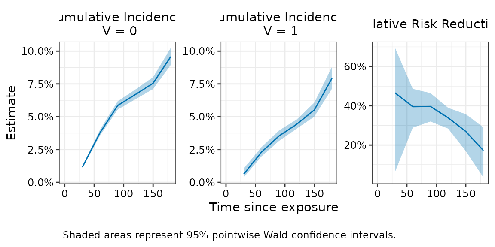
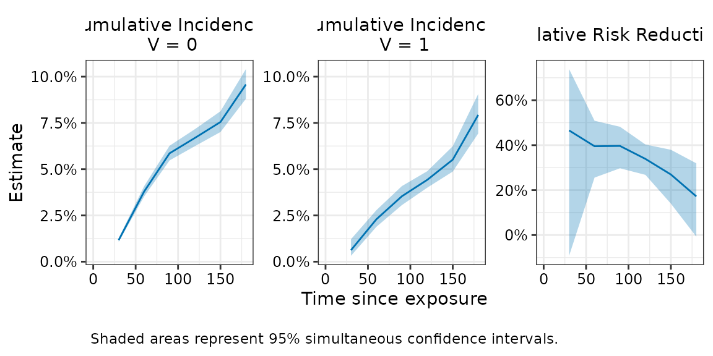
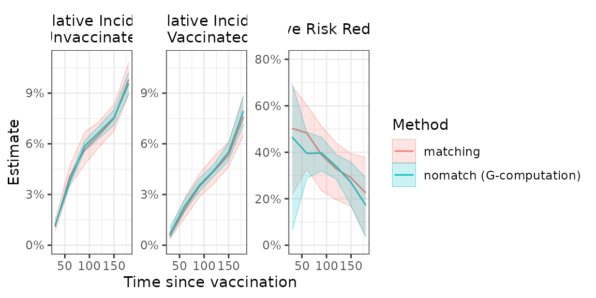

Introduction
The nomatch package uses G-computation style estimation
to compute marginal cumulative incidence in observational cohort studies
with a binary exposure and a time-to-event outcome. The approach aligns
with the target trial emulation framework (Hernán
and Robins 2016) and provides an alternative to matching-based
methods, which can be inefficient. Estimation involves fitting two
exposure-specific Cox models which adjust for baseline confounders.
Predictions from these models are used to estimate marginal cumulative
incidence under interventions of exposure and no exposure. Effect
measures such as risk differences, risk ratios, and relative risk
reduction are also provided.
Method
To study the effectiveness of an intervention, we would ideally conduct a randomized trial. In such a trial, individuals are assigned to receive the intervention or not at a well-defined time, and outcomes are measured from the time of assignment. Cumulative incidence between the two groups can then be compared at a fixed follow-up time.
In observational studies, this comparison is less straightforward because individuals who remain unexposed do not have an obvious start of follow-up. One way to address this issue is to imagine assigning individuals to receive (or not receive) the intervention on specific days, similar to the assignment time in a randomized trial.
Under this perspective, we can define cumulative incidences for each intervention day and covariate group. These quantities can then be averaged (marginalized) over the observed distribution of exposure days and covariates to obtain overall cumulative incidence estimates. This mirrors the marginal comparisons typically reported in randomized trials, where cumulative incidence estimates implicitly average over the distribution of assignment times and baseline covariates within each treatment group.
Usage
We use nomatch to estimate the effectiveness of a binary
exposure in an observational cohort study. The package can be loaded as
follows:
We illustrate the use of the package using a simple simulated
dataset, simdata, included in the package. For exposition,
we will assume this dataset represents data from an observational
vaccine study. In practice, data from other disease settings can be used
as well. The first few rows of simdata can be viewed as
follows:
simdata <- as_tibble(simdata) #for prettier printing
# View data
head(simdata)
#> # A tibble: 6 × 7
#> ID x1 x2 V D_obs Y event
#> <int> <int> <int> <int> <dbl> <dbl> <dbl>
#> 1 1 1 7 1 2 92 0
#> 2 2 0 7 0 NA 210 0
#> 3 3 0 11 1 35 210 0
#> 4 4 0 10 1 6 210 0
#> 5 5 1 11 0 NA 210 0
#> 6 6 1 7 0 NA 90 0The data contains one row per individual (ID) and a set
of individual baseline covariates (x1, x2).
Information on an individual’s exposure is encompassed in 1) their
binary vaccination status V with values
1 = vaccinated, 0 = unvaccinated, and 2) their time to
receiving vaccination D_obs, which is a numeric value for
vaccinated individuals and NA for unvaccinated individuals.
The data also includes a right-censored survival
outcome(Y, event) where Y represents follow-up
time for an outcome (e.g. infection or death), and event
indicates whether the individual experienced the event with values
1 = event, 0 = censored.
Estimating cumulative incidence
We can invoke the nomatch function to compute marginal
cumulative incidences. The main types of arguments are:
Data arguments
- data, outcome_time, outcome_status, exposure, exposure_time, covariates: Specify the dataset and the variable names describing the outcome, exposure, and confounders.-
Estimation arguments control what cumulative incidences are computed:
-
immune_lagexcludes events occuring withimmune_lagtime units after exposure. This is common in vaccine studies, where immunity takes time to develop. In this example we setimmune_lag = 14days, although it can be set to 0 when not relevant. -
timepointswhen to evaluate cumulative incidence. Here we compute cumulative incidence at 30, 60, 90, …, 180 days after vaccination.
-
Bootstrap argument -
boot_repscontrols how many bootstrap replicates are used to construct confidence intervals and p-values. We use a small number here for speed, butboot_reps = 1000is recommended for publication-quality results. By default, Wald-type bootstrap confidence intervals are returned. Bootstraps can be parallelized using thefutureframework. Simply set a parallel plan before calling nomatch(): e.g.
# Set parallel plan before calling nomatch():
# - multisession is recommended as it runs multiple parallel processes
# in the background and is supported by all operating systems
future::plan(future::multisession, workers = 4)
# Run nomatch()
fit <- nomatch(..., boot_reps = 1000, seed = 123)
# Reset when done
future::plan(future::sequential) Since we have specified a small number of bootstraps, we will run the code without setting up a parallel backend.
# Compute cumulative incidence
fit <- nomatch(data = simdata,
outcome_time = "Y",
outcome_status = "event",
exposure = "V",
exposure_time = "D_obs",
covariates = c("x1", "x2"),
immune_lag = 14,
timepoints = seq(30, 180, by = 30),
boot_reps = 10)
#> Bootstrapping 10 samples...
#> Bootstrap completed in 3.68 secsThe cumulative incidence estimates (cuminc_0 for
unexposed and cuminc_1 for exposed) ) and other
effectiveness measures are stored within the $estimates
component of the fitted object.
str(fit$estimates, give.attr = FALSE)
#> List of 5
#> $ cuminc_0 : num [1:6, 1:5] 0.0116 0.0379 0.0586 0.0669 0.0755 ...
#> $ cuminc_1 : num [1:6, 1:5] 0.00622 0.02293 0.03535 0.04424 0.05515 ...
#> $ risk_difference : num [1:6, 1:5] -0.00542 -0.01498 -0.02323 -0.02267 -0.02034 ...
#> $ risk_ratio : num [1:6, 1:5] 0.534 0.605 0.603 0.661 0.731 ...
#> $ relative_risk_reduction: num [1:6, 1:5] 0.466 0.395 0.397 0.339 0.269 ...We can thus preview the relative risk reduction estimates (i.e. vaccine effectiveness) using
head(fit$estimates$relative_risk_reduction)
#> estimate wald_lower wald_upper wald_pval wald_n
#> 30 0.4655914 0.06415232 0.6948301 2.838690e-02 10
#> 60 0.3952484 0.28840317 0.4860510 1.370845e-09 10
#> 90 0.3965357 0.31989227 0.4645419 2.220446e-16 10
#> 120 0.3388351 0.28382017 0.3896239 0.000000e+00 10
#> 150 0.2694672 0.16974131 0.3572146 1.515877e-06 10
#> 180 0.1719935 0.03465023 0.2897966 1.593802e-02 10If all confounders are adjusted for, the resulting cumulative incidence/effect estimates can be interpreted as the cumulative incidences or effect that would be observed in a clinical trial in which participants 1) are similar to those observed to be exposed and 2) who enroll into the study such that the distribution of enrollments times matches the distribution of observed exposure times.
Additional details about estimation approach
Internally, nomatch() fits two Cox models — one for the
unexposed, one for the exposed.
In the unexposed model, time to endpoint is measured from the study start (or chosen time origin). This model includes all individuals, with exposed individuals censored at their time of exposure. The model adjusts fo baseline covariates.
In the exposed model, time to endpoint is measured
from the time of exposure. This model includes only exposed individuals
who remained event-free immune_lag days after exposure. The
model adjusts for baseline covariates and flexibly accounts for when
exposure occurred (by default, using a natural cubic spline with 4
degrees of freedom).
These Cox models are used to predict time- and covariate-specific cumulative incidences which are then marginalized. By default, the predictions are marginalized over the distribution of exposure times and covariates in the exposed.
A summary of the estimation approach and fitted models can be obtained by
summary(fit)
#>
#> ======================================================================
#> Analysis Summary
#> ======================================================================
#> Method: nomatch (G-computation)
#> Evaluation times: 30, 60, 90, 120, 150, 180
#> Immune lag: 14
#> Adjusted for: x1, x2
#>
#> Bootstrap: 10 replicates
#> Confidence level: 95 %
#> Successful samples: 10-10 (range across timepoints)
#> ----------------------------------------------------------------------
#> Sample:
#> ----------------------------------------------------------------------
#> N total: 10000
#> Number of events: 1007
#>
#> N exposed: 4112
#> N exposed at-risk <immune_lag> days after exposure: 4045
#>
#> Distribution of exposure times among at-risk <immune_lag> days after exposure:
#> Range: 1 - 194 | Median (IQR): 18 (11 - 32) | Mean: 25.5
#>
#> ----------------------------------------------------------------------
#> Model for unexposed:
#> ----------------------------------------------------------------------
#> N = 10000 | Number of events = 664
#> Use '$model_0' to see model details.
#>
#> ----------------------------------------------------------------------
#> Model for exposed:
#> ----------------------------------------------------------------------
#> N = 4045 | Number of events = 265
#> Use '$model_1' to see model details.
#>
#> ======================================================================and the weights used for marginalization are returned in the
$weights component of the fitted object.
Plotting cumulative incidence curves
We can visualize the cumulative incidence and effectiveness estimates
using plot(). If smooth cumulative incidence curves are
desired, it is best to supply a dense grid of timepoints. Our example
plot appears somewhat coarse because we evaluated the estimates at only
six timepoints.
plot(fit, effect = "relative_risk_reduction")
Plotting simultaneous confidence intervals
The plot above shows pointwise confidence intervals, which are the
usual 95% CIs computed independently at each timepoint. If inference on
the entire curve is desired, simultaneous confidence intervals should be
used instead. These can be added using
add_simultaneous_ci(). This function updates an existing
fit with simultaneous confidence intervals, provided bootstrap samples
were retained (keep_boot_samples = TRUE, the default). The updated fit
should be saved as a new object.
#Compute simultaneous CI
fit_with_simul <- add_simultaneous_ci(fit, seed = 1234)The simultaneous confidence intervals are now stored in the fitted object.
fit_with_simul
#>
#> Risk Ratio Estimates
#> ==================================================
#> Call: nomatch(data = simdata, outcome_time = "Y", outcome_status = "event",
#> exposure = "V", exposure_time = "D_obs", covariates = c("x1",
#> "x2"), immune_lag = 14, timepoints = seq(30, 180, by = 30),
#> boot_reps = 10)
#>
#> Result:
#> Timepoint Estimate 95% Wald CI: Lower 95% Wald CI: Upper Wald p-value
#> 1 30 0.534 0.305 0.936 2.84e-02
#> 2 60 0.605 0.514 0.712 1.37e-09
#> 3 90 0.603 0.535 0.680 2.22e-16
#> 4 120 0.661 0.610 0.716 0.00e+00
#> 5 150 0.731 0.643 0.830 1.52e-06
#> 6 180 0.828 0.710 0.965 1.59e-02
#> 95% Simul CI: Lower 95% Simul CI: Upper
#> 1 0.261 1.093
#> 2 0.491 0.744
#> 3 0.518 0.703
#> 4 0.597 0.732
#> 5 0.620 0.860
#> 6 0.681 1.007
#>
#> Use summary() for more details
#> Use plot() to visualize resultsTo plot simultaneous confidence intervals, use plot()
with the argument ci_type = "simul".
The fitted object must already contain the simultaneous confidence
intervals; otherwise, the call will return an error.
#Plot simultaneous confidence bands
plot(fit_with_simul , effect = "relative_risk_reduction", ci_type = "simul") 
The simultaneous confidence intervals indicate that 95% of such bands, constructed across repeated samples, would contain the entire true curve.
Creating custom plots
Users may also wish to create their own plots. The function
estimates_to_df() takes the estimates component of the
fitted object and reformats it into a long dataset suitable for
plotting.
plot_data <- estimates_to_df(fit)
head(as_tibble(plot_data))
#> # A tibble: 6 × 7
#> t0 term estimate wald_lower wald_upper wald_pval wald_n
#> <dbl> <chr> <dbl> <dbl> <dbl> <dbl> <dbl>
#> 1 30 cuminc_0 0.0116 0.0109 0.0125 NA 10
#> 2 30 cuminc_1 0.00622 0.00369 0.0105 NA 10
#> 3 30 risk_difference -0.00542 -0.00904 -0.00180 0.00336 10
#> 4 30 risk_ratio 0.534 0.305 0.936 0.0284 10
#> 5 30 relative_risk_reduction 0.466 0.0642 0.695 0.0284 10
#> 6 60 cuminc_0 0.0379 0.0357 0.0402 NA 10For example, we can create a plot that overlays the cumulative incidence estimates for the two exposure types as follows:
plot_data |>
filter(term %in% c("cuminc_0", "cuminc_1")) |>
ggplot(aes(x = t0, y = estimate, color = term, fill = term)) +
geom_line() +
geom_ribbon(aes(ymin = wald_lower, ymax = wald_upper), alpha = 0.2, linewidth = 0) +
theme_bw() +
scale_color_discrete(breaks = c("cuminc_0", "cuminc_1"), labels = c("Unvaccinated", "Vaccinated"))+
scale_fill_discrete(breaks = c("cuminc_0", "cuminc_1"), labels = c("Unvaccinated", "Vaccinated"))+
labs(x = "Time since vaccination",
y = "Estimate",
title = "Cumulative Incidence Curves",
color = "Exposure Group",
fill = "Exposure Group")
Comparison with matching
Our estimation approach is generally expected to produce similar point estimates as a rolling-cohort matching analysis in which exposed individuals are matched to unexposed individuals at their time of exposure. However, our approach may offer greater precision, which can be particularly beneficial in smaller samples or when endpoints are rare.
For comparison, we provide a simple implementation of a rolling-cohort matching analysis using 1:1 exact matching and Kaplan–Meier estimation to compute marginal cumulative incidences. These matching functions are intentionally limited in scope and may be slow on large datasets.
# ------------------------------------------------------------------------------
# 3. Compare results with matching estimator
matched_cohort <- match_rolling_cohort(data = simdata,
outcome_time = "Y",
exposure = "V",
exposure_time = "D_obs",
matching_vars = c("x1", "x2"),
id_name = "ID",
seed = 5678)
matched_data <- matched_cohort[[1]]
fit_matching <-matching(matched_data = matched_data,
outcome_time = "Y",
outcome_status = "event",
exposure = "V",
exposure_time = "D_obs",
immune_lag = 14,
timepoints = seq(30, 180, by = 30),
boot_reps = 10)
#> Bootstrapping 10 samples...
#> Bootstrap completed in 1.46 secs
fit_matching
#>
#> Risk Ratio Estimates
#> ==================================================
#> Call: matching(matched_data = matched_data, outcome_time = "Y", outcome_status = "event",
#> exposure = "V", exposure_time = "D_obs", immune_lag = 14,
#> timepoints = seq(30, 180, by = 30), boot_reps = 10)
#>
#> Result:
#> Timepoint Estimate 95% Wald CI: Lower 95% Wald CI: Upper Wald p-value
#> 1 30 0.497 0.316 0.783 2.55e-03
#> 2 60 0.517 0.397 0.672 8.81e-07
#> 3 90 0.611 0.488 0.766 1.81e-05
#> 4 120 0.671 0.561 0.804 1.53e-05
#> 5 150 0.710 0.606 0.832 2.36e-05
#> 6 180 0.775 0.622 0.966 2.35e-02
#>
#> Use summary() for more details
#> Use plot() to visualize results
# Plot matching vs proposed estimator - nomatch tends to have similar point estimates but narrower
# confidence intervals
comparison <- rbind(estimates_to_df(fit) |> mutate(method = "nomatch (G-computation)"),
estimates_to_df(fit_matching) |> mutate(method = "matching"))
comparison |>
filter(term %in% c("cuminc_0", "cuminc_1", "relative_risk_reduction")) |>
mutate(term_label = factor(term,
c("cuminc_0", "cuminc_1", "relative_risk_reduction"),
c("Cumulative Incidence:\n Unvaccinated",
"Cumulative Incidence:\n Vaccinated",
"Relative Risk Reduction"))) |>
ggplot(aes(x = t0, y = estimate, color = method, fill = method)) +
geom_line() +
geom_ribbon(aes(ymin = wald_lower, ymax = wald_upper), alpha = 0.2, linewidth = 0.1) +
facet_wrap(~term_label, scales = "free") +
ggh4x::facetted_pos_scales(
y = list(
ggplot2::scale_y_continuous(labels = scales::label_percent(),
limits = c(0, 0.11)),
ggplot2::scale_y_continuous(labels = scales::label_percent(),
limits = c(0, 0.11)),
ggplot2::scale_y_continuous(labels = scales::label_percent(),
limits = c(0, 0.8))
)) +
theme_bw() +
theme(strip.background = ggplot2::element_rect(fill = "white", color = "white"),
strip.text = ggplot2::element_text(size = 11, colour = "black")) +
labs(x = "Time since vaccination",
y = "Estimate",
color = "Method",
fill = "Method")
Session Information
#> R version 4.5.3 (2026-03-11)
#> Platform: x86_64-pc-linux-gnu
#> Running under: Ubuntu 24.04.3 LTS
#>
#> Matrix products: default
#> BLAS: /usr/lib/x86_64-linux-gnu/openblas-pthread/libblas.so.3
#> LAPACK: /usr/lib/x86_64-linux-gnu/openblas-pthread/libopenblasp-r0.3.26.so; LAPACK version 3.12.0
#>
#> locale:
#> [1] LC_CTYPE=C.UTF-8 LC_NUMERIC=C LC_TIME=C.UTF-8
#> [4] LC_COLLATE=C.UTF-8 LC_MONETARY=C.UTF-8 LC_MESSAGES=C.UTF-8
#> [7] LC_PAPER=C.UTF-8 LC_NAME=C LC_ADDRESS=C
#> [10] LC_TELEPHONE=C LC_MEASUREMENT=C.UTF-8 LC_IDENTIFICATION=C
#>
#> time zone: UTC
#> tzcode source: system (glibc)
#>
#> attached base packages:
#> [1] stats graphics grDevices utils datasets methods base
#>
#> other attached packages:
#> [1] purrr_1.2.1 future_1.70.0 nomatch_0.1.0 dplyr_1.2.0 ggplot2_4.0.2
#> [6] tibble_3.3.1
#>
#> loaded via a namespace (and not attached):
#> [1] utf8_1.2.6 sass_0.4.10 generics_0.1.4 lattice_0.22-9
#> [5] listenv_0.10.1 digest_0.6.39 magrittr_2.0.4 evaluate_1.0.5
#> [9] grid_4.5.3 RColorBrewer_1.1-3 fastmap_1.2.0 jsonlite_2.0.0
#> [13] Matrix_1.7-4 survival_3.8-6 scales_1.4.0 codetools_0.2-20
#> [17] textshaping_1.0.5 jquerylib_0.1.4 cli_3.6.5 rlang_1.1.7
#> [21] parallelly_1.46.1 splines_4.5.3 withr_3.0.2 cachem_1.1.0
#> [25] yaml_2.3.12 ggh4x_0.3.1 tools_4.5.3 parallel_4.5.3
#> [29] globals_0.19.1 vctrs_0.7.1 R6_2.6.1 lifecycle_1.0.5
#> [33] fs_1.6.7 MASS_7.3-65 ragg_1.5.1 furrr_0.3.1
#> [37] pkgconfig_2.0.3 desc_1.4.3 pkgdown_2.2.0 pillar_1.11.1
#> [41] bslib_0.10.0 gtable_0.3.6 glue_1.8.0 systemfonts_1.3.2
#> [45] xfun_0.56 tidyselect_1.2.1 knitr_1.51 farver_2.1.2
#> [49] htmltools_0.5.9 rmarkdown_2.30 labeling_0.4.3 compiler_4.5.3
#> [53] S7_0.2.1